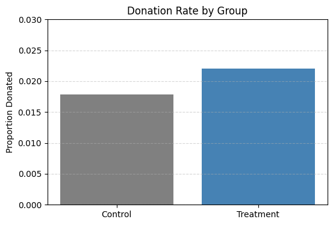
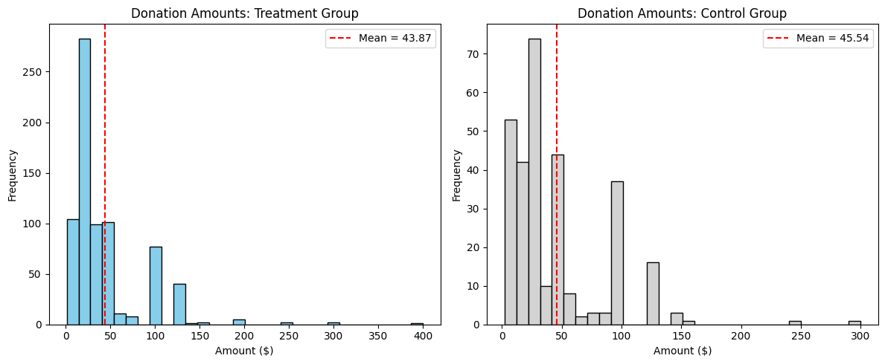
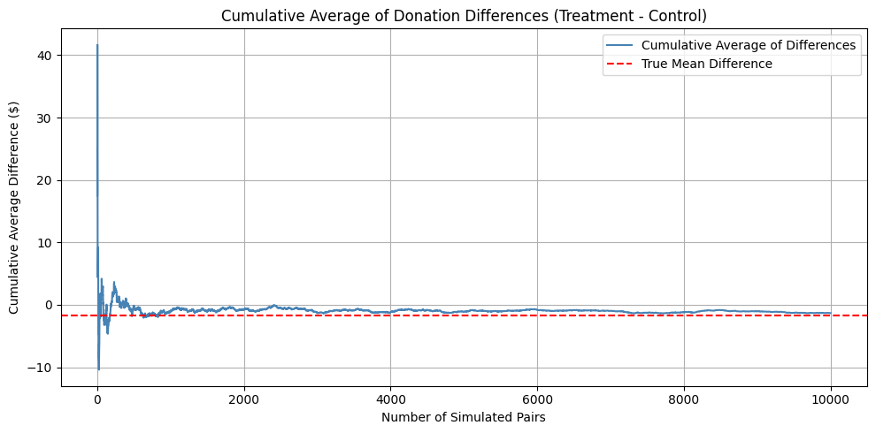

import pandas as pd
import numpy as npdata = pd.read_stata('karlan_list_2007.dta')
data.head()| treatment | control | ratio | ratio2 | ratio3 | size | size25 | size50 | size100 | sizeno | ... | redcty | bluecty | pwhite | pblack | page18_39 | ave_hh_sz | median_hhincome | powner | psch_atlstba | pop_propurban | |
|---|---|---|---|---|---|---|---|---|---|---|---|---|---|---|---|---|---|---|---|---|---|
| 0 | 0 | 1 | Control | 0 | 0 | Control | 0 | 0 | 0 | 0 | ... | 0.0 | 1.0 | 0.446493 | 0.527769 | 0.317591 | 2.10 | 28517.0 | 0.499807 | 0.324528 | 1.0 |
| 1 | 0 | 1 | Control | 0 | 0 | Control | 0 | 0 | 0 | 0 | ... | 1.0 | 0.0 | NaN | NaN | NaN | NaN | NaN | NaN | NaN | NaN |
| 2 | 1 | 0 | 1 | 0 | 0 | $100,000 | 0 | 0 | 1 | 0 | ... | 0.0 | 1.0 | 0.935706 | 0.011948 | 0.276128 | 2.48 | 51175.0 | 0.721941 | 0.192668 | 1.0 |
| 3 | 1 | 0 | 1 | 0 | 0 | Unstated | 0 | 0 | 0 | 1 | ... | 1.0 | 0.0 | 0.888331 | 0.010760 | 0.279412 | 2.65 | 79269.0 | 0.920431 | 0.412142 | 1.0 |
| 4 | 1 | 0 | 1 | 0 | 0 | $50,000 | 0 | 1 | 0 | 0 | ... | 0.0 | 1.0 | 0.759014 | 0.127421 | 0.442389 | 1.85 | 40908.0 | 0.416072 | 0.439965 | 1.0 |
5 rows × 51 columns
df = data.describe(include='all')
df| treatment | control | ratio | ratio2 | ratio3 | size | size25 | size50 | size100 | sizeno | ... | redcty | bluecty | pwhite | pblack | page18_39 | ave_hh_sz | median_hhincome | powner | psch_atlstba | pop_propurban | |
|---|---|---|---|---|---|---|---|---|---|---|---|---|---|---|---|---|---|---|---|---|---|
| count | 50083.000000 | 50083.000000 | 50083 | 50083.000000 | 50083.000000 | 50083 | 50083.000000 | 50083.000000 | 50083.000000 | 50083.000000 | ... | 49978.000000 | 49978.000000 | 48217.000000 | 48047.000000 | 48217.000000 | 48221.000000 | 48209.000000 | 48214.000000 | 48215.000000 | 48217.000000 |
| unique | NaN | NaN | 4 | NaN | NaN | 5 | NaN | NaN | NaN | NaN | ... | NaN | NaN | NaN | NaN | NaN | NaN | NaN | NaN | NaN | NaN |
| top | NaN | NaN | Control | NaN | NaN | Control | NaN | NaN | NaN | NaN | ... | NaN | NaN | NaN | NaN | NaN | NaN | NaN | NaN | NaN | NaN |
| freq | NaN | NaN | 16687 | NaN | NaN | 16687 | NaN | NaN | NaN | NaN | ... | NaN | NaN | NaN | NaN | NaN | NaN | NaN | NaN | NaN | NaN |
| mean | 0.666813 | 0.333187 | NaN | 0.222311 | 0.222211 | NaN | 0.166723 | 0.166623 | 0.166723 | 0.166743 | ... | 0.510245 | 0.488715 | 0.819599 | 0.086710 | 0.321694 | 2.429012 | 54815.700533 | 0.669418 | 0.391661 | 0.871968 |
| std | 0.471357 | 0.471357 | NaN | 0.415803 | 0.415736 | NaN | 0.372732 | 0.372643 | 0.372732 | 0.372750 | ... | 0.499900 | 0.499878 | 0.168561 | 0.135868 | 0.103039 | 0.378115 | 22027.316665 | 0.193405 | 0.186599 | 0.258654 |
| min | 0.000000 | 0.000000 | NaN | 0.000000 | 0.000000 | NaN | 0.000000 | 0.000000 | 0.000000 | 0.000000 | ... | 0.000000 | 0.000000 | 0.009418 | 0.000000 | 0.000000 | 0.000000 | 5000.000000 | 0.000000 | 0.000000 | 0.000000 |
| 25% | 0.000000 | 0.000000 | NaN | 0.000000 | 0.000000 | NaN | 0.000000 | 0.000000 | 0.000000 | 0.000000 | ... | 0.000000 | 0.000000 | 0.755845 | 0.014729 | 0.258311 | 2.210000 | 39181.000000 | 0.560222 | 0.235647 | 0.884929 |
| 50% | 1.000000 | 0.000000 | NaN | 0.000000 | 0.000000 | NaN | 0.000000 | 0.000000 | 0.000000 | 0.000000 | ... | 1.000000 | 0.000000 | 0.872797 | 0.036554 | 0.305534 | 2.440000 | 50673.000000 | 0.712296 | 0.373744 | 1.000000 |
| 75% | 1.000000 | 1.000000 | NaN | 0.000000 | 0.000000 | NaN | 0.000000 | 0.000000 | 0.000000 | 0.000000 | ... | 1.000000 | 1.000000 | 0.938827 | 0.090882 | 0.369132 | 2.660000 | 66005.000000 | 0.816798 | 0.530036 | 1.000000 |
| max | 1.000000 | 1.000000 | NaN | 1.000000 | 1.000000 | NaN | 1.000000 | 1.000000 | 1.000000 | 1.000000 | ... | 1.000000 | 1.000000 | 1.000000 | 0.989622 | 0.997544 | 5.270000 | 200001.000000 | 1.000000 | 1.000000 | 1.000000 |
11 rows × 51 columns
df['amount']count 50083.000000
unique NaN
top NaN
freq NaN
mean 0.915694
std 8.709199
min 0.000000
25% 0.000000
50% 0.000000
75% 0.000000
max 400.000000
Name: amount, dtype: float64from scipy import stats
# for mrm2
df_treatment = data[data['treatment'] == 1]['mrm2'].dropna()
df_control = data[data['treatment'] == 0]['mrm2'].dropna()
t_stat, p_val = stats.ttest_ind(df_treatment, df_control, equal_var=True)
print(f"T-statistic: {t_stat:.3f}")
print(f"P-value: {p_val:.4f}")T-statistic: 0.119
P-value: 0.9049import numpy as np
mean_diff = df_treatment.mean() - df_control.mean()
n1, n2 = len(df_treatment), len(df_control)
s1, s2 = df_treatment.std(ddof=1), df_control.std(ddof=1)
sp = np.sqrt(((n1 - 1)*s1**2 + (n2 - 1)*s2**2) / (n1 + n2 - 2))
se = sp * np.sqrt(1/n1 + 1/n2)
t_crit = stats.t.ppf(0.975, df=n1 + n2 - 2)
ci_low = mean_diff - t_crit * se
ci_high = mean_diff + t_crit * se
print(f"\nMean Difference: {mean_diff:.3f}")
print(f"95% Confidence Interval: ({ci_low:.3f}, {ci_high:.3f})")
Mean Difference: 0.014
95% Confidence Interval: (-0.211, 0.238)import statsmodels.api as sm
df_clean = data[['mrm2', 'treatment']].dropna()
X = sm.add_constant(df_clean['treatment'])
y = df_clean['mrm2']
model = sm.OLS(y, X).fit()
print(model.summary()) OLS Regression Results
==============================================================================
Dep. Variable: mrm2 R-squared: 0.000
Model: OLS Adj. R-squared: -0.000
Method: Least Squares F-statistic: 0.01428
Date: Tue, 22 Apr 2025 Prob (F-statistic): 0.905
Time: 15:11:15 Log-Likelihood: -1.9585e+05
No. Observations: 50082 AIC: 3.917e+05
Df Residuals: 50080 BIC: 3.917e+05
Df Model: 1
Covariance Type: nonrobust
==============================================================================
coef std err t P>|t| [0.025 0.975]
------------------------------------------------------------------------------
const 12.9981 0.094 138.979 0.000 12.815 13.181
treatment 0.0137 0.115 0.119 0.905 -0.211 0.238
==============================================================================
Omnibus: 8031.352 Durbin-Watson: 2.004
Prob(Omnibus): 0.000 Jarque-Bera (JB): 12471.135
Skew: 1.163 Prob(JB): 0.00
Kurtosis: 3.751 Cond. No. 3.23
==============================================================================
Notes:
[1] Standard Errors assume that the covariance matrix of the errors is correctly specified.# for freq
df_treatment = data[data['treatment'] == 1]['freq'].dropna()
df_control = data[data['treatment'] == 0]['freq'].dropna()
t_stat, p_val = stats.ttest_ind(df_treatment, df_control, equal_var=True)
print(f"T-statistic: {t_stat:.3f}")
print(f"P-value: {p_val:.4f}")T-statistic: -0.111
P-value: 0.9117df['freq']count 50083.000000
unique NaN
top NaN
freq NaN
mean 8.039355
std 11.394454
min 0.000000
25% 2.000000
50% 4.000000
75% 10.000000
max 218.000000
Name: freq, dtype: float64import numpy as np
# 計算平均差
mean_diff = df_treatment.mean() - df_control.mean()
# 樣本數與標準差
n1, n2 = len(df_treatment), len(df_control)
s1, s2 = df_treatment.std(ddof=1), df_control.std(ddof=1)
# 合併標準差（pooled standard deviation）
sp = np.sqrt(((n1 - 1)*s1**2 + (n2 - 1)*s2**2) / (n1 + n2 - 2))
# 標準誤
se = sp * np.sqrt(1/n1 + 1/n2)
# 95% 信賴區間
t_crit = stats.t.ppf(0.975, df=n1 + n2 - 2)
ci_low = mean_diff - t_crit * se
ci_high = mean_diff + t_crit * se
print(f"\nMean Difference: {mean_diff:.3f}")
print(f"95% Confidence Interval: ({ci_low:.3f}, {ci_high:.3f})")
Mean Difference: -0.012
95% Confidence Interval: (-0.224, 0.200)df_clean = data[['freq', 'treatment']].dropna()
# 加入常數項（intercept）
X = sm.add_constant(df_clean['treatment']) # 會產生兩個欄位：常數 + treatment
y = df_clean['freq']
# 執行 OLS 線性回歸
model = sm.OLS(y, X).fit()
# 印出完整結果
print(model.summary()) OLS Regression Results
==============================================================================
Dep. Variable: freq R-squared: 0.000
Model: OLS Adj. R-squared: -0.000
Method: Least Squares F-statistic: 0.01230
Date: Tue, 22 Apr 2025 Prob (F-statistic): 0.912
Time: 17:58:28 Log-Likelihood: -1.9292e+05
No. Observations: 50083 AIC: 3.858e+05
Df Residuals: 50081 BIC: 3.859e+05
Df Model: 1
Covariance Type: nonrobust
==============================================================================
coef std err t P>|t| [0.025 0.975]
------------------------------------------------------------------------------
const 8.0473 0.088 91.231 0.000 7.874 8.220
treatment -0.0120 0.108 -0.111 0.912 -0.224 0.200
==============================================================================
Omnibus: 49107.114 Durbin-Watson: 2.016
Prob(Omnibus): 0.000 Jarque-Bera (JB): 3644795.393
Skew: 4.707 Prob(JB): 0.00
Kurtosis: 43.718 Cond. No. 3.23
==============================================================================
Notes:
[1] Standard Errors assume that the covariance matrix of the errors is correctly specified.# for amountchange
df_treatment = data[data['treatment'] == 1]['amountchange'].dropna()
df_control = data[data['treatment'] == 0]['amountchange'].dropna()
t_stat, p_val = stats.ttest_ind(df_treatment, df_control, equal_var=True)
print(f"T-statistic: {t_stat:.3f}")
print(f"P-value: {p_val:.4f}")T-statistic: 0.527
P-value: 0.5982import numpy as np
# 計算平均差
mean_diff = df_treatment.mean() - df_control.mean()
# 樣本數與標準差
n1, n2 = len(df_treatment), len(df_control)
s1, s2 = df_treatment.std(ddof=1), df_control.std(ddof=1)
# 合併標準差（pooled standard deviation）
sp = np.sqrt(((n1 - 1)*s1**2 + (n2 - 1)*s2**2) / (n1 + n2 - 2))
# 標準誤
se = sp * np.sqrt(1/n1 + 1/n2)
# 95% 信賴區間
t_crit = stats.t.ppf(0.975, df=n1 + n2 - 2)
ci_low = mean_diff - t_crit * se
ci_high = mean_diff + t_crit * se
print(f"\nMean Difference: {mean_diff:.3f}")
print(f"95% Confidence Interval: ({ci_low:.3f}, {ci_high:.3f})")
Mean Difference: 6.331
95% Confidence Interval: (-17.216, 29.877)df['amountchange']count 50083.000000
unique NaN
top NaN
freq NaN
mean -52.672016
std 1267.238647
min -200412.125000
25% -50.000000
50% -30.000000
75% -25.000000
max 275.000000
Name: amountchange, dtype: float64# for female
import pandas as pd
import numpy as np
df_treatment = data[data['treatment'] == 1]['female'].dropna()
df_control = data[data['treatment'] == 0]['female'].dropna()
t_stat, p_val = stats.ttest_ind(df_treatment, df_control, equal_var=True)
print(f"T-statistic: {t_stat:.3f}")
print(f"P-value: {p_val:.4f}")
mean_diff = df_treatment.mean() - df_control.mean()
n1, n2 = len(df_treatment), len(df_control)
s1, s2 = df_treatment.std(ddof=1), df_control.std(ddof=1)
sp = np.sqrt(((n1 - 1)*s1**2 + (n2 - 1)*s2**2) / (n1 + n2 - 2))
se = sp * np.sqrt(1/n1 + 1/n2)
t_crit = stats.t.ppf(0.975, df=n1 + n2 - 2)
ci_low = mean_diff - t_crit * se
ci_high = mean_diff + t_crit * se
print(f"\nMean Difference: {mean_diff:.3f}")
print(f"95% Confidence Interval: ({ci_low:.3f}, {ci_high:.3f})")T-statistic: -1.758
P-value: 0.0787
Mean Difference: -0.008
95% Confidence Interval: (-0.016, 0.001)df['female']count 48972.000000
unique NaN
top NaN
freq NaN
mean 0.277669
std 0.447854
min 0.000000
25% 0.000000
50% 0.000000
75% 1.000000
max 1.000000
Name: female, dtype: float64import matplotlib.pyplot as plt
grouped = data.groupby('treatment')['gave'].mean()
grouped.index = ['Control', 'Treatment']
plt.figure(figsize=(6, 4))
plt.bar(grouped.index, grouped.values, color=["gray", "steelblue"])
plt.ylabel('Proportion Donated')
plt.title('Donation Rate by Group')
plt.ylim(0, 0.03) # 因為捐款率很低，設定 y 軸比較清楚
plt.grid(axis='y', linestyle='--', alpha=0.5)
plt.show()
# for whether they donate or not
import pandas as pd
import numpy as np
df_treatment = data[data['treatment'] == 1]['gave'].dropna()
df_control = data[data['treatment'] == 0]['gave'].dropna()
t_stat, p_val = stats.ttest_ind(df_treatment, df_control, equal_var=True)
print(f"T-statistic: {t_stat:.3f}")
print(f"P-value: {p_val:.4f}")
mean_diff = df_treatment.mean() - df_control.mean()
n1, n2 = len(df_treatment), len(df_control)
s1, s2 = df_treatment.std(ddof=1), df_control.std(ddof=1)
sp = np.sqrt(((n1 - 1)*s1**2 + (n2 - 1)*s2**2) / (n1 + n2 - 2))
se = sp * np.sqrt(1/n1 + 1/n2)
t_crit = stats.t.ppf(0.975, df=n1 + n2 - 2)
ci_low = mean_diff - t_crit * se
ci_high = mean_diff + t_crit * se
print(f"\nMean Difference: {mean_diff:.3f}")
print(f"95% Confidence Interval: ({ci_low:.3f}, {ci_high:.3f})")T-statistic: 3.101
P-value: 0.0019
Mean Difference: 0.004
95% Confidence Interval: (0.002, 0.007)df_clean = data[['gave', 'treatment']].dropna()
# 加入常數項（intercept）
X = sm.add_constant(df_clean['treatment']) # 會產生兩個欄位：常數 + treatment
y = df_clean['gave']
# 執行 OLS 線性回歸
model = sm.OLS(y, X).fit()
# 印出完整結果
print(model.summary()) OLS Regression Results
==============================================================================
Dep. Variable: gave R-squared: 0.000
Model: OLS Adj. R-squared: 0.000
Method: Least Squares F-statistic: 9.618
Date: Tue, 22 Apr 2025 Prob (F-statistic): 0.00193
Time: 19:56:19 Log-Likelihood: 26630.
No. Observations: 50083 AIC: -5.326e+04
Df Residuals: 50081 BIC: -5.324e+04
Df Model: 1
Covariance Type: nonrobust
==============================================================================
coef std err t P>|t| [0.025 0.975]
------------------------------------------------------------------------------
const 0.0179 0.001 16.225 0.000 0.016 0.020
treatment 0.0042 0.001 3.101 0.002 0.002 0.007
==============================================================================
Omnibus: 59814.280 Durbin-Watson: 2.005
Prob(Omnibus): 0.000 Jarque-Bera (JB): 4317152.727
Skew: 6.740 Prob(JB): 0.00
Kurtosis: 46.440 Cond. No. 3.23
==============================================================================
Notes:
[1] Standard Errors assume that the covariance matrix of the errors is correctly specified.import pandas as pd
import statsmodels.api as sm
df_clean = data[['gave', 'treatment']].dropna()
X = sm.add_constant(df_clean['treatment'])
y = df_clean['gave']
probit_model = sm.Probit(y, X).fit()
print(probit_model.summary())Optimization terminated successfully.
Current function value: 0.100443
Iterations 7
Probit Regression Results
==============================================================================
Dep. Variable: gave No. Observations: 50083
Model: Probit Df Residuals: 50081
Method: MLE Df Model: 1
Date: Tue, 22 Apr 2025 Pseudo R-squ.: 0.0009783
Time: 20:25:33 Log-Likelihood: -5030.5
converged: True LL-Null: -5035.4
Covariance Type: nonrobust LLR p-value: 0.001696
==============================================================================
coef std err z P>|z| [0.025 0.975]
------------------------------------------------------------------------------
const -2.1001 0.023 -90.073 0.000 -2.146 -2.054
treatment 0.0868 0.028 3.113 0.002 0.032 0.141
==============================================================================data| treatment | control | ratio | ratio2 | ratio3 | size | size25 | size50 | size100 | sizeno | ... | redcty | bluecty | pwhite | pblack | page18_39 | ave_hh_sz | median_hhincome | powner | psch_atlstba | pop_propurban | |
|---|---|---|---|---|---|---|---|---|---|---|---|---|---|---|---|---|---|---|---|---|---|
| 0 | 0 | 1 | Control | 0 | 0 | Control | 0 | 0 | 0 | 0 | ... | 0.0 | 1.0 | 0.446493 | 0.527769 | 0.317591 | 2.10 | 28517.0 | 0.499807 | 0.324528 | 1.000000 |
| 1 | 0 | 1 | Control | 0 | 0 | Control | 0 | 0 | 0 | 0 | ... | 1.0 | 0.0 | NaN | NaN | NaN | NaN | NaN | NaN | NaN | NaN |
| 2 | 1 | 0 | 1 | 0 | 0 | $100,000 | 0 | 0 | 1 | 0 | ... | 0.0 | 1.0 | 0.935706 | 0.011948 | 0.276128 | 2.48 | 51175.0 | 0.721941 | 0.192668 | 1.000000 |
| 3 | 1 | 0 | 1 | 0 | 0 | Unstated | 0 | 0 | 0 | 1 | ... | 1.0 | 0.0 | 0.888331 | 0.010760 | 0.279412 | 2.65 | 79269.0 | 0.920431 | 0.412142 | 1.000000 |
| 4 | 1 | 0 | 1 | 0 | 0 | $50,000 | 0 | 1 | 0 | 0 | ... | 0.0 | 1.0 | 0.759014 | 0.127421 | 0.442389 | 1.85 | 40908.0 | 0.416072 | 0.439965 | 1.000000 |
| ... | ... | ... | ... | ... | ... | ... | ... | ... | ... | ... | ... | ... | ... | ... | ... | ... | ... | ... | ... | ... | ... |
| 50078 | 1 | 0 | 1 | 0 | 0 | $25,000 | 1 | 0 | 0 | 0 | ... | 0.0 | 1.0 | 0.872797 | 0.089959 | 0.257265 | 2.13 | 45047.0 | 0.771316 | 0.263744 | 1.000000 |
| 50079 | 0 | 1 | Control | 0 | 0 | Control | 0 | 0 | 0 | 0 | ... | 0.0 | 1.0 | 0.688262 | 0.108889 | 0.288792 | 2.67 | 74655.0 | 0.741931 | 0.586466 | 1.000000 |
| 50080 | 0 | 1 | Control | 0 | 0 | Control | 0 | 0 | 0 | 0 | ... | 1.0 | 0.0 | 0.900000 | 0.021311 | 0.178689 | 2.36 | 26667.0 | 0.778689 | 0.107930 | 0.000000 |
| 50081 | 1 | 0 | 3 | 0 | 1 | Unstated | 0 | 0 | 0 | 1 | ... | 1.0 | 0.0 | 0.917206 | 0.008257 | 0.225619 | 2.57 | 39530.0 | 0.733988 | 0.184768 | 0.634903 |
| 50082 | 1 | 0 | 3 | 0 | 1 | $25,000 | 1 | 0 | 0 | 0 | ... | 0.0 | 1.0 | 0.530023 | 0.074112 | 0.340698 | 3.70 | 48744.0 | 0.717843 | 0.127941 | 0.994181 |
50083 rows × 51 columns
df_ratio = data[(data['treatment'] == 1) & (data['ratio'].notnull()) & (data['gave'].notnull())]
gave_11 = df_ratio[df_ratio['ratio'] == 1]['gave'].dropna()
gave_21 = df_ratio[df_ratio['ratio'] == 2]['gave'].dropna()
gave_31 = df_ratio[df_ratio['ratio'] == 3]['gave'].dropna()
# 比較各組平均捐款率
mean_11 = gave_11.mean()
mean_21 = gave_21.mean()
mean_31 = gave_31.mean()
print("Donation Rates:")
print(f"1:1 = {mean_11:.4f}")
print(f"2:1 = {mean_21:.4f}")
print(f"3:1 = {mean_31:.4f}")
# T-tests
print("\nT-test Results:")
t_21, p_21 = stats.ttest_ind(gave_21, gave_11, equal_var=False)
t_31, p_31 = stats.ttest_ind(gave_31, gave_11, equal_var=False)
t_32, p_32 = stats.ttest_ind(gave_31, gave_21, equal_var=False)
print(f"2:1 vs 1:1 → T = {t_21:.3f}, p = {p_21:.4f}")
print(f"3:1 vs 1:1 → T = {t_31:.3f}, p = {p_31:.4f}")
print(f"3:1 vs 2:1 → T = {t_32:.3f}, p = {p_32:.4f}")Donation Rates:
1:1 = 0.0207
2:1 = 0.0226
3:1 = 0.0227
T-test Results:
2:1 vs 1:1 → T = 0.965, p = 0.3345
3:1 vs 1:1 → T = 1.015, p = 0.3101
3:1 vs 2:1 → T = 0.050, p = 0.9600df_ratio = data[(data['treatment'] == 1) & (data['ratio'].isin([1,2,3])) & (data['gave'].notnull())]
df_ratio['ratio2'] = (df_ratio['ratio'] == 2).astype(int)
df_ratio['ratio3'] = (df_ratio['ratio'] == 3).astype(int)
X = sm.add_constant(df_ratio[['ratio2', 'ratio3']])
y = df_ratio['gave']
model = sm.OLS(y, X).fit()
print(model.summary()) OLS Regression Results
==============================================================================
Dep. Variable: gave R-squared: 0.000
Model: OLS Adj. R-squared: -0.000
Method: Least Squares F-statistic: 0.6454
Date: Tue, 22 Apr 2025 Prob (F-statistic): 0.524
Time: 23:39:57 Log-Likelihood: 16688.
No. Observations: 33396 AIC: -3.337e+04
Df Residuals: 33393 BIC: -3.334e+04
Df Model: 2
Covariance Type: nonrobust
==============================================================================
coef std err t P>|t| [0.025 0.975]
------------------------------------------------------------------------------
const 0.0207 0.001 14.912 0.000 0.018 0.023
ratio2 0.0019 0.002 0.958 0.338 -0.002 0.006
ratio3 0.0020 0.002 1.008 0.313 -0.002 0.006
==============================================================================
Omnibus: 38963.957 Durbin-Watson: 1.995
Prob(Omnibus): 0.000 Jarque-Bera (JB): 2506478.937
Skew: 6.511 Prob(JB): 0.00
Kurtosis: 43.394 Cond. No. 3.73
==============================================================================
Notes:
[1] Standard Errors assume that the covariance matrix of the errors is correctly specified./var/folders/4_/b_ln9nlx3j19x_2nmv9t3rd40000gn/T/ipykernel_56870/1714721735.py:3: SettingWithCopyWarning:
A value is trying to be set on a copy of a slice from a DataFrame.
Try using .loc[row_indexer,col_indexer] = value instead
See the caveats in the documentation: https://pandas.pydata.org/pandas-docs/stable/user_guide/indexing.html#returning-a-view-versus-a-copy
df_ratio['ratio2'] = (df_ratio['ratio'] == 2).astype(int)
/var/folders/4_/b_ln9nlx3j19x_2nmv9t3rd40000gn/T/ipykernel_56870/1714721735.py:4: SettingWithCopyWarning:
A value is trying to be set on a copy of a slice from a DataFrame.
Try using .loc[row_indexer,col_indexer] = value instead
See the caveats in the documentation: https://pandas.pydata.org/pandas-docs/stable/user_guide/indexing.html#returning-a-view-versus-a-copy
df_ratio['ratio3'] = (df_ratio['ratio'] == 3).astype(int)# directly from data
gave_11 = df_ratio[df_ratio['ratio'] == 1]['gave'].mean()
gave_21 = df_ratio[df_ratio['ratio'] == 2]['gave'].mean()
gave_31 = df_ratio[df_ratio['ratio'] == 3]['gave'].mean()
# 算差值
print("Direct from data:")
print(f"2:1 - 1:1 = {gave_21 - gave_11:.4f}")
print(f"3:1 - 1:1 = {gave_31 - gave_11:.4f}")
print(f"3:1 - 2:1 = {gave_31 - gave_21:.4f}")Direct from data:
2:1 - 1:1 = 0.0019
3:1 - 1:1 = 0.0020
3:1 - 2:1 = 0.0001# from model
b2 = model.params['ratio2']
b3 = model.params['ratio3']
print("\nFrom regression coefficients:")
print(f"2:1 - 1:1 = {b2:.4f}") # b2 就是 2:1 相對於 1:1 的差
print(f"3:1 - 1:1 = {b3:.4f}") # b3 就是 3:1 相對於 1:1 的差
print(f"3:1 - 2:1 = {b3 - b2:.4f}") # b3 相對於 1:1，再減去 b2
From regression coefficients:
2:1 - 1:1 = 0.0019
3:1 - 1:1 = 0.0020
3:1 - 2:1 = 0.0001amount_t = data[data['treatment'] == 1]['amount'].dropna()
amount_c = data[data['treatment'] == 0]['amount'].dropna()
t_stat, p_val = stats.ttest_ind(amount_t, amount_c, equal_var=False)
print(f"T-statistic: {t_stat:.3f}")
print(f"P-value: {p_val:.4f}")
print(f"Mean difference: {amount_t.mean() - amount_c.mean():.3f}")T-statistic: 1.918
P-value: 0.0551
Mean difference: 0.154df_positive = data[(data['amount'] > 0) & data['treatment'].notnull()]
X = sm.add_constant(df_positive['treatment'])
y = df_positive['amount']
model = sm.OLS(y, X).fit()
print(model.summary()) OLS Regression Results
==============================================================================
Dep. Variable: amount R-squared: 0.000
Model: OLS Adj. R-squared: -0.001
Method: Least Squares F-statistic: 0.3374
Date: Wed, 23 Apr 2025 Prob (F-statistic): 0.561
Time: 00:05:31 Log-Likelihood: -5326.8
No. Observations: 1034 AIC: 1.066e+04
Df Residuals: 1032 BIC: 1.067e+04
Df Model: 1
Covariance Type: nonrobust
==============================================================================
coef std err t P>|t| [0.025 0.975]
------------------------------------------------------------------------------
const 45.5403 2.423 18.792 0.000 40.785 50.296
treatment -1.6684 2.872 -0.581 0.561 -7.305 3.968
==============================================================================
Omnibus: 587.258 Durbin-Watson: 2.031
Prob(Omnibus): 0.000 Jarque-Bera (JB): 5623.279
Skew: 2.464 Prob(JB): 0.00
Kurtosis: 13.307 Cond. No. 3.49
==============================================================================
Notes:
[1] Standard Errors assume that the covariance matrix of the errors is correctly specified.df_positive = data[(data['amount'] > 0) & data['treatment'].notnull()]
# 分成 treatment 和 control
amount_t = df_positive[df_positive['treatment'] == 1]['amount']
amount_c = df_positive[df_positive['treatment'] == 0]['amount']
# 計算平均
mean_t = amount_t.mean()
mean_c = amount_c.mean()
# 畫圖：Treatment group
plt.figure(figsize=(12, 5))
plt.subplot(1, 2, 1)
plt.hist(amount_t, bins=30, color='skyblue', edgecolor='black')
plt.axvline(mean_t, color='red', linestyle='--', label=f'Mean = {mean_t:.2f}')
plt.title('Donation Amounts: Treatment Group')
plt.xlabel('Amount ($)')
plt.ylabel('Frequency')
plt.legend()
# 畫圖：Control group
plt.subplot(1, 2, 2)
plt.hist(amount_c, bins=30, color='lightgray', edgecolor='black')
plt.axvline(mean_c, color='red', linestyle='--', label=f'Mean = {mean_c:.2f}')
plt.title('Donation Amounts: Control Group')
plt.xlabel('Amount ($)')
plt.ylabel('Frequency')
plt.legend()
plt.tight_layout()
plt.show()
control = data[(data['treatment'] == 0) & (data['amount'] > 0)]['amount'].values
treatment = data[(data['treatment'] == 1) & (data['amount'] > 0)]['amount'].values
# Step 1: 抽樣模擬
np.random.seed(42)
draws_control = np.random.choice(control, 100000, replace=True)
draws_treatment = np.random.choice(treatment, 10000, replace=True)
# Step 2: 算出 10,000 個差異值（對應 index）
differences = draws_treatment - draws_control[:10000]
# Step 3: 算累積平均
cumulative_avg = np.cumsum(differences) / np.arange(1, len(differences) + 1)
# Step 4: 畫圖
plt.figure(figsize=(10, 5))
plt.plot(cumulative_avg, color='steelblue', label='Cumulative Average of Differences')
plt.axhline(np.mean(treatment) - np.mean(control), color='red', linestyle='--', label='True Mean Difference')
plt.title('Cumulative Average of Donation Differences (Treatment - Control)')
plt.xlabel('Number of Simulated Pairs')
plt.ylabel('Cumulative Average Difference ($)')
plt.legend()
plt.grid(True)
plt.tight_layout()
plt.show()
control = data[(data['treatment'] == 0) & (data['amount'] > 0)]['amount'].values
treatment = data[(data['treatment'] == 1) & (data['amount'] > 0)]['amount'].values
# 模擬參數
sample_sizes = [50, 200, 500, 1000]
n_simulations = 1000
# 畫圖
plt.figure(figsize=(18, 4))
for i, size in enumerate(sample_sizes):
diff_list = []
for _ in range(n_simulations):
draw_c = np.random.choice(control, size, replace=True)
draw_t = np.random.choice(treatment, size, replace=True)
diff = np.mean(draw_t) - np.mean(draw_c)
diff_list.append(diff)
# 畫圖
plt.subplot(1, 4, i+1)
plt.hist(diff_list, bins=30, color='skyblue', edgecolor='black')
plt.axvline(x=0, color='red', linestyle='--', label='Zero Line')
plt.title(f'Sample size = {size}')
plt.xlabel('Mean Difference ($)')
plt.ylabel('Frequency')
plt.legend()
plt.tight_layout()
plt.show()